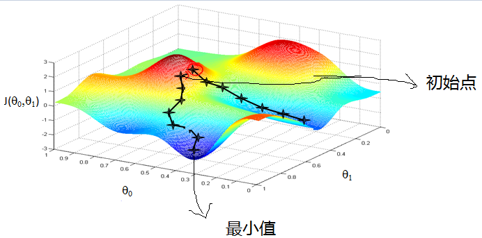

梯度简介
- 定义：对多元函数的参数求偏导数，把求得的各个参数的偏导数以向量的形式写出来，就是梯度。比如函数f(x, y), 分别对x, y求偏导数，求得的梯度向量表示如下：
$$ (\frac{∂f}{∂x}, \frac{∂f}{∂y})^T $$
该式即梯度计算公式，简称$grad f(x,y)$或者$▽f(x,y)$。
- 意义：梯度的意义从几何意义上讲，就是函数变化增加最快的地方。在点$(x_0, y_0)$, 梯度方向$▽f(x_0,y_0)$就是函数$f(x, y)$增加最快的地方。沿着梯度向量的方向，更加容易找到函数的最大值。反过来说，沿着梯度向量相反的方向，梯度减少最快，也就是更加容易找到函数的最小值。这也就是梯度上升和梯度下降的原理。
梯度下降具体原理
应用与原理
在机器学习算法中，在最小化损失函数时，可以通过梯度下降法来一步步的迭代求解，得到最小化的损失函数，和模型参数值。反过来，如果我们需要求解损失函数的最大值，就可以用梯度上升法。
梯度下降求最小值，通过计算某一点的梯度，找到最快下降的方向，并沿着该方向走一步，接着重复这一过程，直到找到最小值，或是局部最小值。以下为图示：

相关概念
- 步长（Learning rate）：步长决定了在梯度下降迭代的过程中，每一步沿梯度负方向前进的长度。步长由使用者自行定义寻找，没有固定的最优值。
- 特征（Feature）：指的是样本中输入部分，比如2个单特征的样本$(x_0, y_0)$, $(x_1, y_1)$, 则第一个样本特征为$x_0$，第一个样本输出为$y_0$。
- 假设函数（hypothesis function）：在监督学习中，为了拟合输入样本，而使用的假设函数，记为$hθ(x)$。比如线性回归中，对于单个特征的m个样本:
$$ (x_i,y_i)\quad(i=1,2,…m) $$
可以采用假设函数如下:
$$ h_\theta(x)=\theta_0+\theta_1x $$ - 损失函数（loss function）：为了评估模型拟合的好坏，通常用损失函数来度量拟合的程度。损失函数极小化，意味着拟合程度最好，对应的模型参数即为最优参数。在线性回归中，损失函数通常为样本输出和假设函数的差取平方。比如对于m个样本$(x_i,y_i)\quad(i=1,2,…m)$,采用线性回归，损失函数为：
$$ J(\theta_0,\theta_1)=\sum\limits_{i=1}^m(h_θ(x_i)−y_i)^2 $$
其中$x_i$表示第i个样本特征，$y_i$表示第i个样本对应的输出，$h_θ(x_i)$为假设函数。
算法
代数算法
-
确定优化模型的假设函数和损失函数
以线性回归为例，假设函数表示为$h_\theta(x_1, x_2,…,x_n)=\theta_0+\theta_1x_1+…+\theta_nx_n$，$\theta_i$为模型的参数，$x_i$为样本的特征。在这里假设$x_0=1$，可以得到一个简化的假设函数：
$$ h_\theta(x_1, x_2,…,x_n)=\sum\limits_{i=0}^n\theta_ix_i$$
随后根据假设函数，得到损失函数（假设函数与样本输出差取平方）：
$$ J(\theta_0, \theta_1…, \theta_n) = \frac{1}{2m}\sum\limits_{j=1}^{m}(h_\theta(x_0^{(j)}, x_1^{(j)}, …x_n^{(j)}) - y_j)^2 $$在这里，求和后除以m，得到的是均方误差（MSE）。
除以2是为了之后求导方便，并没什么影响。 -
初始化参数
需要初始化的参数包括$\theta_0,\theta_1,…,\theta_n$，步长$\alpha$和终止距离$\epsilon$。其中，习惯将所有$\theta$初始化为0，步长初始化为0.001，以3的倍数变化，直到找到合适的步长。终止距离选择一个较小的值，当某次下降距离小于该值，就代表接近收敛，可以找到局部最小值。 -
进行梯度下降计算
- 首先确定当前损失函数的梯度，对于参数$\theta_i$，它的梯度计算式（求偏导）如下：
$$ \frac{\partial}{\partial\theta_i}J(\theta_0, \theta_1…, \theta_n) $$ - 然后用计算得出的梯度，乘上步长，得到下降的距离，即$\alpha$乘上一步求出的梯度。
- 对所有$\theta$进行对应计算，如果某一个距离小于$\epsilon$，则终止算法，当前的所有$\theta$值就是最终结果。否则进入第四步。
- 更新所有的$\theta$，用原始值减去距离，得到新的参数值：
$$ \theta_i = \theta_i - \alpha\frac{\partial}{\partial\theta_i}J(\theta_0, \theta_1…, \theta_n) $$
- 首先确定当前损失函数的梯度，对于参数$\theta_i$，它的梯度计算式（求偏导）如下：
矩阵算法
-
首先要确认线性回归代数表达式对应的矩阵表达式，对于$h_\theta(x_1, x_2, …x_n) = \theta_0 + \theta_{1}x_1 + … + \theta_{n}x_{n}$, 假设样本数为m，他的矩阵表达式为：
$$ h_{\theta}(\mathbf X) = {\mathbf X\theta} $$
其中，X可以表示为：
$$\begin{bmatrix}
1 & x_1^{(1)} & \cdots & x_n^{(1)} \
1 & x_1^{(2)} & \cdots & x_n^{(2)} \
\vdots & \vdots & \cdots & \vdots \
1 & x_1^{(m)} & \cdots & x_n^{(m)} \
\end{bmatrix}$$
$\theta$可表示为：
$$\begin{bmatrix}
\theta_0 \
\theta_1 \
\vdots \
\theta_n \
\end{bmatrix}$$ -
之后写出对应损失函数的矩阵形式：
$$ J(\mathbf\theta) = \frac{1}{2}(\mathbf{X\theta} - \mathbf{Y})^T(\mathbf{X\theta} - \mathbf{Y}) $$
其中，Y是样本的输出变量，表示为：
$$\begin{bmatrix}
y^{(1)} \
y^{(2)} \
\vdots \
y^{(m)} \
\end{bmatrix}$$ -
算法的相关参数的初始化与代数法相同，$\theta$可以取0，或者调优后的值。计算下降距离时，同样使用步长乘梯度：
$$ \alpha\frac{\partial}{\partial\theta}J(\theta) $$
计算方法与代数法大致相同，关键在于对于矩阵的偏导，这里用到了两个矩阵求导的公式：- $\frac{\partial}{\partial\mathbf{x}}(\mathbf{x^Tx}) =2\mathbf{x};; x为向量$。
- $\nabla_Xf(AX+B) = A^T\nabla_Yf,;; Y=AX+B,;;f(Y)为标量$
损失函数对于θ向量的偏导数计算如下：
$$ \frac{\partial}{\partial\mathbf\theta}J(\mathbf\theta) = \mathbf{X}^T(\mathbf{X\theta} - \mathbf{Y}) $$
所以最终梯度下降的转换式为：
$$ \mathbf\theta= \mathbf\theta - \alpha\mathbf{X}^T(\mathbf{X\theta} - \mathbf{Y}) $$
梯度下降算法调优
算法步长选择
算法的步长选择。在前面的算法描述中，取初始步长为0.001，但是实际上取值取决于数据样本，可以多取一些值，从大到小，或者以3倍往上增加，分别运行算法，看看迭代效果，如果损失函数在变小，说明取值有效，否则要增大步长。前面说了。步长太大，会导致迭代过快，甚至有可能错过最优解。步长太小，迭代速度太慢，很长时间算法都不能结束。所以算法的步长需要多次运行后才能得到一个较为优的值。
参数初始值选择
初始值不同，获得的最小值也有可能不同，因此梯度下降求得的只是局部最小值；当然如果损失函数是凸函数则一定是最优解。由于有局部最优解的风险，需要多次用不同初始值运行算法，好的初值能减少运行时间，并且有更大可能得到局部最优解。
归一化
由于样本不同特征的取值范围不一样，可能导致迭代很慢，为了减少特征取值的影响，可以对特征数据归一化，也就是对于每个特征$x$，求出它的期望$\overline{x}$和标准差(std)，然后转化为：
$$ \frac{x - \overline{x}}{std(x)} $$
这个值叫做z分数（z-score），也叫标准分数（standard score），是一个数与平均数的差再除以标准差的过程。在统计学中，标准分数是一个观测或数据点的值高于被观测值或测量值的平均值的标准偏差的符号数。
z分数可以回答这样一个问题："一个给定分数距离平均数多少个标准差?"在平均数之上的分数会得到一个正的标准分数，在平均数之下的分数会得到一个负的标准分数。 z分数是一种可以看出某分数在分布中相对位置的方法。
不同的梯度下降算法
批量梯度下降法（Batch Gradient Descent，BGD）
批量梯度下降法，是梯度下降法最常用的形式，具体做法也就是在更新参数时使用所有的样本来进行更新。第三章中提到的梯度下降计算方式就是BGD。使用原来的参数，减去步长与该参数偏导的乘积，对应的公式为：
$$ \theta_i = \theta_i - \alpha\sum\limits_{j=1}^{m}(h_\theta(x_0^{(j)}, x_1^{(j)}, …x_n^{(j)}) - y_j)x_i^{(j)} $$
随机梯度下降法（Stochastic Gradient Descent，SGD）
随机梯度下降法，和BGD是两个极端，一个采用所有数据来梯度下降，一个用一个样本来梯度下降。自然各自的优缺点都非常突出。
- 对于训练速度来说，SGD由于每次仅仅采用一个样本来迭代，训练速度很快，而BGD在样本量很大的时候，训练速度不能让人满意。
- 对于准确度来说，SGD用于仅仅用一个样本决定梯度方向，导致解很有可能不是最优。对于收敛速度来说，由于SGD一次迭代一个样本，导致迭代方向变化很大，不能很快的收敛到局部最优解。
由于SGD只会取随机一个样本，计算公式变为：
$$ \theta_i = \theta_i - \alpha (h_\theta(x_0^{(j)}, x_1^{(j)}, …x_n^{(j)}) - y_j)x_i^{(j)} $$
小批量梯度下降法（Mini-batch Gradient Descent，MBGD）
小批量梯度下降法是批量梯度下降法和随机梯度下降法的折衷，也就是对于m个样本，我们采用$x$个子样本来迭代，$1<x<m$。一般可以取$x=10$，当然根据样本的数据，可以调整这个$x$的值。对应的更新公式是：
$$ \theta_i = \theta_i - \alpha \sum\limits_{j=t}^{t+x-1}(h_\theta(x_0^{(j)}, x_1^{(j)}, …x_n^{(j)}) - y_j)x_i^{(j)} $$
If you like this blog or find it useful for you, you are welcome to comment on it. You are also welcome to share this blog, so that more people can participate in it. If the images used in the blog infringe your copyright, please contact the author to delete them. Thank you !